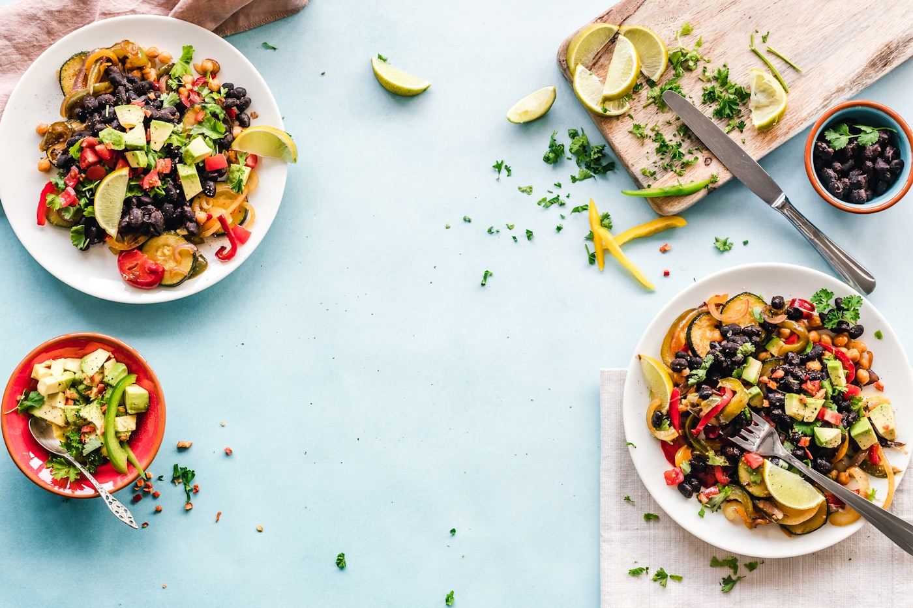

Our story
A community kitchen
that never stopped cooking
We didn't set out to open a restaurant. We set out to feed a room of people who were learning to slow down.

2007
It began with a meditation class
A group of us were enrolled in a meditation class in Makati. Someone offered to cook plant-based lunches for everyone. Word got around, the orders grew, and what started as a favour turned into a small home-based lunch delivery.
the recipes we use now are mostly the ones from that kitchen

Now
Same food, a room of our own
Today there's a small dine-in space on E. Pascua Street in Kasilawan, a daily delivery service, a weekly meal plan, and a shelf of frozen bestsellers. The scale changed. The way we cook didn't — from scratch, by hand, generous portions, honest prices.
People find us through friends, through Reddit threads, through a fan post that once called us "one of the best vegan restos in the world." We'll take it.
What we believe
Vegan food shouldn't feel like a compromise
Filipino first
We cook the dishes people grew up with. Plant-based is the method, not the identity.
From scratch
No shortcuts we wouldn't take at home. Sauces built, not poured from a jar.
Enough on the plate
Big portions, friendly prices. You should leave full and with change in your pocket.